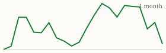

| Today's briefing for operators |
Top line: Fund flips with almost none of your own cash |
|
| Sunday, October 18, 2026 | Late Edition | Curated from 70 voices on X |
|
Real Estate
How One Investor Buys Two to Three Flips a Month Without His Own Cash
Hard money covers 90% of the price and all of the rehab. Private money or a HELOC fills the rest.
By @Jacob_Naviaux |
Jacob Naviaux, who says he has closed more than 500 deals, laid out the stack he uses every month: a hard money lender funds 90% of the purchase price and 100% of the rehab, while a private lender or his own HELOC covers the last 10%, plus the rehab draw and closing costs. |
The point for operators is velocity. Keeping cash out of each deal lets him run two to three flips at once, and the capital constraint moves from the bank account to the lender relationships. |
|
| Read on X |
|
Real Estate & Deals Call the Owners of Empty Buildings By @ChrisRamsey60 Vacant and unleased properties sell far more often, says Chris Ramsey, who credits the filter with landing prime locations. Built for acquisitions lists. Read on XThe Deal Is Often a Year Away By @ChrisRamsey60 A great seller call can still be 12 months from a contract. Situations change, partners want out, landlords get tired, so a follow-up system is the business. Read on XLogan Rankin's monthly legal and delinquency report. Image via @loganjrankin on X Running Delinquency Under Half a Percent By @loganjrankin Logan Rankin cut his delinquency goal to 0.75% and is under 0.5% year to date after bringing collections in-house instead of handing them to a third party. Read on XVideo still of Pace Morby's RV park. Image via @PaceJordanMorby on X Three RV Parks, $670K a Year, Bought Creatively By @PaceJordanMorby Pace Morby says a $2M park bought with creative finance nets about $190K a year, with none of his own money in the deal. Read on X |
Mortgage Rates Today's average lender rates | 30-year fixed | 7.37% | +0.04 | | 15-year fixed | 7.04% | +0.06 |
Daily change vs. prior day. Source: Mortgage News Daily, as of 10/16/2026 (updated weekdays about 4 PM ET). |
Business & Leadership Advanced Means Never Skipping the Basics By @AlexHormozi The gap between beginner and advanced, says Alex Hormozi, is that advanced people never stop doing the fundamentals. 3.8K likes. Read on XLeaders Create the Outcome They Fear By @LeilaHormozi Leila Hormozi: leaders who expect betrayal stop trusting, the team pulls back, and the distance becomes their proof. Fear of losing people works the same way. Read on XBad Days Are Guaranteed. Bad Weeks Are a Choice. By @danmartell Dan Martell's reminder that one rough day doesn't have to set the tone for the week. Read on X |
Markets Close of Fri, Oct 16 (markets closed since; last close shown) S&P 500 7,659.44 ▼ -84.62 (-1.09%)  Nasdaq Composite 26,140.03 ▼ -573.00 (-2.15%)  Yahoo Finance chart data (daily closes) |
AI Briefing Anthropic Sets Aside Shares for the Public Good By @AnthropicAI The company is putting 5% of its shares into a new Anthropic Public Benefit Fund. 11.8K likes. Read on XVideo still from NVIDIA's Dynamo walkthrough. Image via @NVIDIAAI on X NVIDIA Shows How to Scale a Model in Five Minutes By @NVIDIAAI A walkthrough of running a model on Kubernetes with NVIDIA Dynamo behind an OpenAI-compatible endpoint. Read on XThe War on AI Agents Has Begun By @gregisenberg Delta, Chase and Amazon are blocking AI agents that skip their ads and upsells. Greg Isenberg expects an arms race, then official agent-friendly doors. Read on XClaude May Soon Read Your Bank Statements By @testingcatalog Anthropic is preparing a Personal Finance feature that links accounts through Plaid and builds dashboards. Read on XMake ChatGPT Explain It Simply By @Sabrina_Ramonov Add "ELI Cactus" (explain like I'm a cactus) when an answer comes back too dense. Read on X |
|
The Hyre Times is compiled each morning by Groky from public posts on X plus public rate and market data. Summaries reflect the authors' own claims and have not been independently verified. Not financial advice. © 2026 Hyre Times. |
|